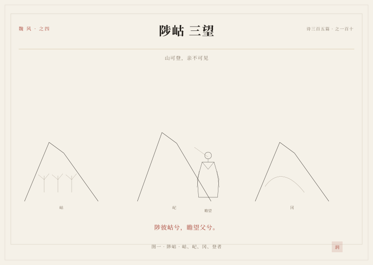
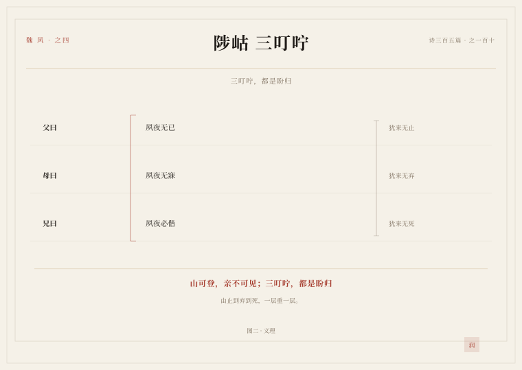

第一百十篇 陟岵
魏风 · 之四 SJ110
朗读 · 普通话
依经文原文朗读，章次不读出；配古琴底乐，不改速、不加拖腔。全库同一音色（豆包 TTS），非播音员录制。
一 解题
诗三判：
- 谁在说：魏国行役之子。登高望父、望母、望兄，却不说自己怎样想，只写亲人怎样叮咛。
- 说什么事：三章只换岵/屺/冈、父/母/兄、无已/无寐/必偕、无止/无弃/无死。山越登越高，话越说越怕。
- 为何编在此：109 写“忧无人知”，110
写“役使人散”。国迫役重，家分成三处。
《毛序》：“《陟岵》，孝子行役，思念父母也。国迫而数侵削，役乎大国，父母兄弟离散，而作是诗也。”
朱子《诗集传》：“赋也。岵，山无草木者；屺，山有草木者；冈，山脊也。上，犹尚也。旃，之焉也。止，获也，言无为人所获也。弃，谓弃其亲而不顾也。偕，俱也。死，谓死于役也。”
本库的看法：《陟岵》是一首把“望”写成“代亲人叮咛”的诗。
登岵、登屺、登冈，是望；父曰、母曰、兄曰，是听。不是儿子说想念，是让亲人替他开口。
三句“上慎旃哉”是同一句；三句“犹来无……”是三种怕：怕被俘、怕被弃、怕死。断语：山可登，亲不可见；三叮咛，都是盼归。
先辨五事：“岵”是有草木的山，不是“无草木”；“屺”是无草木的山，不是“有草木”；“旃”是“之焉”的合音，不是“旗帜”；“上”是“尚”，不是“上面”；“无弃”是不要弃亲，不是“不要抛弃我”。
二 经文
第一章
陟彼岵兮，瞻望父兮。
父曰：嗟！予子行役，夙夜无已。
上慎旃哉！犹来无止！
第二章
陟彼屺兮，瞻望母兮。
母曰：嗟！予季行役，夙夜无寐。
上慎旃哉！犹来无弃！
第三章
陟彼冈兮，瞻望兄兮。
兄曰：嗟！予弟行役，夙夜必偕。
上慎旃哉！犹来无死！
分章：三章，章六句。
三 韵读
- 一章：岵、父、已、止，之部；“止”收，盼归。
- 二章：屺、母、寐、弃，之部转至部；“弃”收，怕弃亲。
- 三章：冈、兄、偕、死，阳部转脂部；“死”收，怕死役。
读法：三章韵脚都收在“怕”上；由止到弃到死，一层重一层。
四 字义与名物
- 陟：登。岵：有草木的山。屺：无草木的山。冈：山脊。
- 瞻望：远望。嗟：叹词。
- 予子：我的儿子；予季：我的小儿子；予弟：我的弟弟。
- 行役：服劳役、兵役。夙夜：早晚。无已：没完没了；无寐：睡不着；必偕：必与同伴俱。
- 上：尚，还是。慎旃：谨慎啊；“旃”为“之焉”合音。
- 无止：不要被俘获而留在他乡。无弃：不要弃亲不顾。无死：不要死于役。
五 今译
登上那有草木的山，远望父亲。父亲说：唉！我的儿子行役，早晚没完没了。千万谨慎啊！还是回来，不要被俘留在他乡！
登上那无草木的山，远望母亲。母亲说：唉！我的小儿子行役，早晚睡不着。千万谨慎啊！还是回来，不要弃亲不顾！
登上那山脊，远望哥哥。哥哥说：唉！我的弟弟行役，早晚必与同伴一起。千万谨慎啊！还是回来，不要死于役！
六 章旨
- 一章：望父。“无已”是役之无休，“无止”是盼归。
- 二章：望母。“无寐”是役之不安，“无弃”是怕弃亲。
- 三章：望兄。“必偕”是役之相保，“无死”是最后的怕。
- 总收：望而不见，故代亲言；三叮咛，都是“犹来”。
七 诗教
- 赋：直陈登望与亲言；赋到“父曰”，比直写思亲更近。
- 观：观“国迫而数侵削”。役重，家散；一家三处，一国皆然。
- 群：子、父、母、兄，四口三章；行役把一家人分到三座山上。
- 怨：诗无怨君，只有怕；怨在“无死”二字，轻轻落下。
八 分寸与边界
- 不可把“岵/屺”读反。岵有草木，屺无草木；一读反，山色就乱。
- 不可把“旃”当旗帜。它是“之焉”；一读旗帜，叮咛就成军旗。
- 不可把“上”当上面。它是“尚”；一读上面，句意就断。
- 不可把“无弃”当“不要抛弃我”。它是不要弃亲；一读抛弃我，母亲的话就成哀求。
- 不可把诗当作纯粹思亲。毛序明说“国迫而数侵削”；一读纯孝，役重就看不见。
九 存疑
- 诗旨：毛序“孝子行役，思念父母”；朱子“赋也”。本库从“代亲言”读。
- “岵/屺”：毛传“山无草木曰岵，有草木曰屺”；朱子反之。从朱子，与常见山色合。
- “旃”：毛传“旃，之也”；朱子“之焉”。从“之焉”合音。
- “无止”：毛传“止，获也”；一说“止，留也”。从“获”，才与行役合。
- “必偕”：毛传“偕，俱也”；一说“偕，偕行”。从俱，见同伴相保。
十 跨典
- 《论语·里仁》：“父母在，不远游，游必有方。”——行役非游，然“有方”之义同；此诗之痛，在无方。
- 《孟子·尽心下》：“父母在不远游”同义；役使离散，正是“远游”之极。
- 《左传·成公二年》：“齐师败绩，逄丑父与公易位。”——行役有被俘之危；“无止”正指此。
- 《诗经·魏风·十亩之间》：“行与子还兮。”——110
盼归，111 退归；一迫一退，魏风之尾已见。
十一 双卡与图
双卡八对：
| 岵（有草木之山） |
岵（无草木之山） |
| 屺（无草木之山） |
屺（有草木之山） |
| 旃（之焉） |
旃（旗帜） |
| 上（尚） |
上（上面） |
| 无已（无休） |
无已（不要停） |
| 无弃（不弃亲） |
无弃（不抛弃我） |
| 必偕（与同伴俱） |
必偕（一定借） |
| 无死（勿死役） |
无死（不死泛称） |

图一 · 陟岵 三山、登者、三望

图二 · 陟岵 三叮咛与三怕
读图三处：
- 三山：图一左岵有草木、中屺无草木、右冈山脊；山不画全，只画坡线与脊线。
- 登者：只画背影与一手搭额，不画脸；望在身外，不在表情。
- “叮咛”在右：图二三栏父/母/兄，各一句“慎旃”，下收“止/弃/死”；三怕并列，末格红。